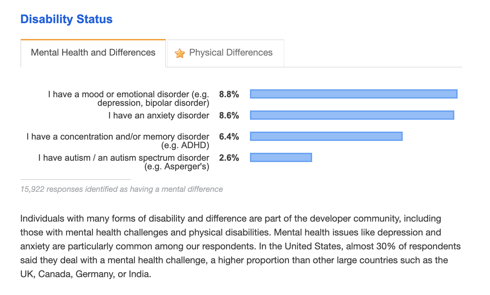

Developing Strategies for Mental Well-Being in the Tech Industry
Jaymie Rosen
@jaymierosen
jaymierosen.com
hello@jaymierosen.com
Disclaimers
- I am not a medical professional
- This talk will include discussions on sensitive topics
- This is my first talk(!)

Outline
- Story that inspired this talk
- Lessons learned
- Stats && research: realities of working in tech
- Tips && advice for mental (+ physical!) well-being
1. Story Time

2. Lessons Learned
Politely ask to take a tour of the office, towards the end of an interview

Don't feel pressured to take a job just because it's a job
Listen to your gut

Speak up early if a job is not working out for you
Keep track of warning signs

THERE ARE OTHER JOBS
Leave a job if you're truly unhappy

Working as a self-employed contractor
Try not to start a new job in November/December

aka winter sucks
Mental and physical health > job
3. Stats && Research: Realities of Working in Tech
Mental Illness and Addiction:
Facts and Statistics
- 1 in 5 Canadians experiences a mental illness or addiction problem
- By the time Canadians reach 40 years of age, 1 in 2 have—or have had—a mental illness
- Mental and physical health are linked. People with a long-term medical condition...are much more likely to also experience mood disorders...people with a mood disorder are at much higher risk of developing a long-term medical condition
- In 2005, just 50% of Canadians would tell friends or co-workers that they have a family member with a mental illness
- In 2015, 70% believe attitudes about mental health issues have changed for the better compared to five years ago
- 64% of Ontario workers would be concerned about how work would be affected if a colleague had a mental illness
- 39% of Ontario workers indicate that they would not tell their managers if they were experiencing a mental health problem
- 40% of respondents to a 2016 survey agreed they have experienced feelings of anxiety or depression but never sought medical help for it
Physical Issues: Sitting Too Much
- Organ damage to heart, pancreas, colon
- Digestion issues and brain damage
- Poor posture
- Pain in neck, upper back, lower back, hips, hamstrings, glutes, and thighs
Unexpected Effects of Screen Time
- Strained, dry eyes, blurred vision, and headaches
- Blue light from digital devices suppresses the sleep-promoting hormone melatonin, keeping us from having restful sleep
- Risk of weight gain, diabetes, and heart disease
How Sunlight Affects Your Mental Health
- Shorter days and less sunlight lead to depression
- Lack of vitamin D can lead to depression
- Serotonin is also released in response to sunlight, which helps elevate your mood and energy
Developer Survey Results 2019
OSMI Mental Health in Tech Survey 2018
Open Sourcing Mental Illness
- Would you feel more comfortable talking to your coworkers about your physical health or your mental health? — 58% responded physical health
- Would you feel comfortable discussing a mental health issue with your direct supervisor(s)? — 31% responded yes
- If a mental health issue prompted you to request a medical leave from work, how easy or difficult would it be to ask for that leave? — 26% responded somewhat easy
- Do you know the options for mental health care available under your employer-provided health coverage? — 38% responded yes
- Has your employer ever formally discussed mental health (for example, as part of a wellness campaign or other official communication)? — 55% responded no
One of my most controversial software opinions is that your sleep quality and stress level matter far, far more than the languages you use or the practices you follow. Nothing else comes close: not type systems, not TDD, not formal methods, not ANYTHING.
— Hillel (@hillelogram) April 20, 2019
Allow me to explain why.
Common misconception: you need to spend every waking moment coding or learning. Learning & practicing help build new skills, but your brain needs time to process everything it’s learned 🤔 Never feel ashamed for taking time for yourself ❤️
— Emma Wedekind 🐞 (@EmmaWedekind) April 19, 2019
By becoming a programmer, you're accepting that you'll never truly know everything; there's always going to be room for growth.
— Kelly Vaughn 🐞 (@kvlly) April 19, 2019
That's the fun part!
Reminder: there's a world out there outside of programming.
— Ali Spittel 🐞 (@ASpittel) April 13, 2019
You are still valid if your job isn't coding.
You don't have to write code all the time.
You don't have to be a coder for your whole career.
Also: I don't write code full time anymore, and haven't for 2+ years.
I hear from many devs who feel torn between staying at their current toxic tech job or putting themselves through a gauntlet of toxic tech interviews to find one that might be a bit better.
— April Wensel (@aprilwensel) April 23, 2019
I offer them empowered alternatives, but also as an industry, we can really do better...
It took me 7 hours and a lot of useless Googling to figure out how to code something today. The end result was 3 lines of code.
— Kelly Vaughn 🐞 (@kvlly) April 23, 2019
I may have 15 years of programming experience, but it's days like today that remind me I'm no different from those learning from scratch.
For those of you struggling to learn code: it does get easier and you can do it. The first year learning web development I had a hard time. I cried a lot and never thought I’d make it. If I can do it, so can you 😁❤️
— Emma Wedekind 🐞 (@EmmaWedekind) April 23, 2019
4. Tips && advice for mental (+ physical!) well-being
- Try not to compare yourself to others
- Be patient with yourself: you're only human!
- Worrying is normal: try to dedicate a few moments during the day to worry
- Write worries down on a piece of paper
- If you feel overwhelmed by web development, find interests outside of coding
- Try to work on small tasks, leading up to a larger project in the end
- Mentor and volunteer — teaching others helps you learn
- Make time to spend with family and friends
- ASK FOR HELP
- Cleanyour space at home and at work
- Coming home to a messy and dirty home can increase mental unrest
- Visit a therapist, psychologist or psychiatrist (talk to your GP, as well)
- Stella's Place provides free comprehensive mental health services for 16 to 29 year olds
- Find help through http://www.camh.ca/
- Being "regular"; gut health is key
- Get enough sleep (aim for 8 hours a night)
- Exercise and stretch
Fermented foods such as fermented vegetables are also important for optimal mental health, as they are key for optimizing your gut health. Many fail to realize that your gut is literally your second brain, and can significantly influence your mind, mood, and behavior. Your gut actually produces more mood-regulating serotonin than your brain does.
- Supplements: vitamin C, vitamin D, probiotics, omega 3s, vitamin B, magnesium
- Eating a well-balanced diet: eating whole foods; avoid procesed foods
- Yoga, pilates, barre: low intensity/impact workouts
- Focus on strength training
- Walking, swimming, biking

- Stretching
- Foam rolling
- Exercise bands

My favourite classes
- Go for a massage or visit a chiropractor (I like bstretched or Sutherland-Chan)